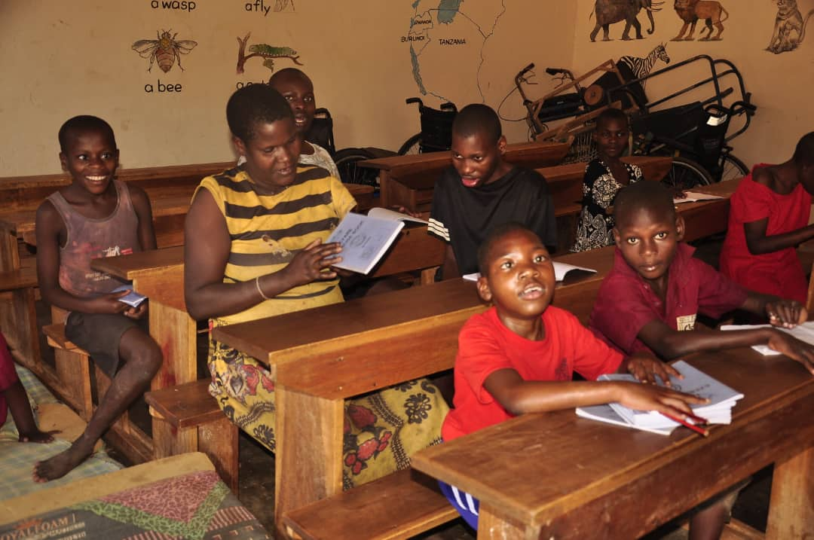

Child & Youth Empowerment
Shamira's Journey to Education
Shamira was not able to attend school before MRF's intervention. Through our education support program, she is now receiving formal education, gaining the knowledge and confidence to build a brighter future for herself and her family.